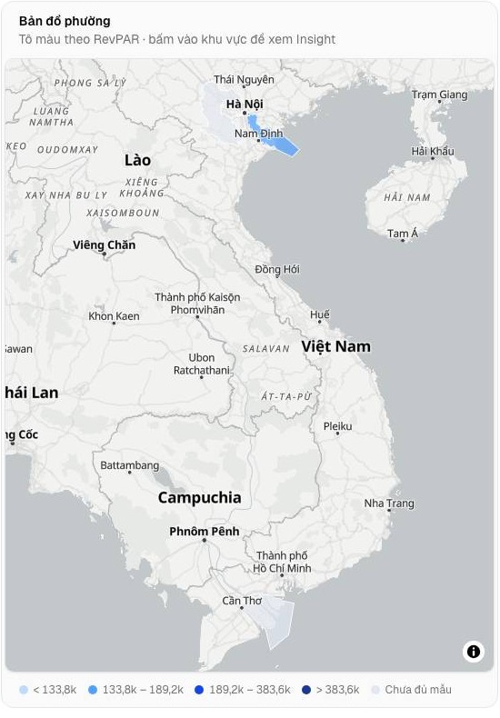
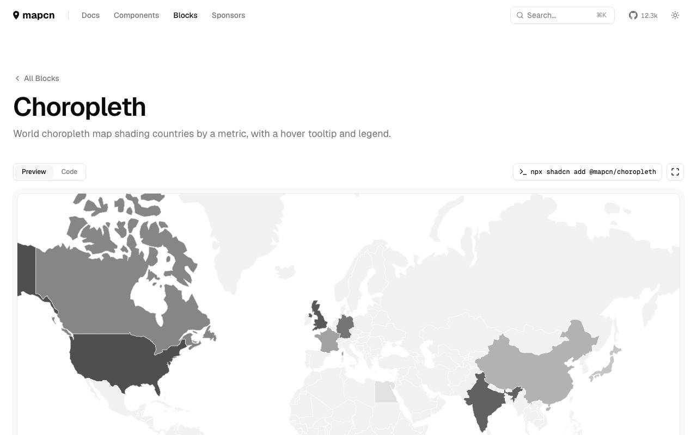
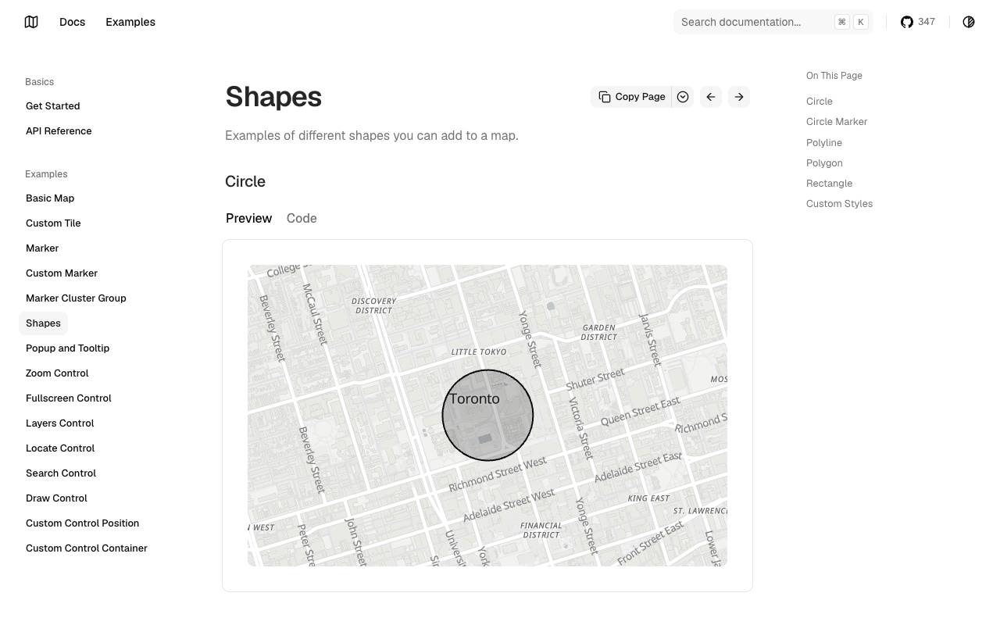
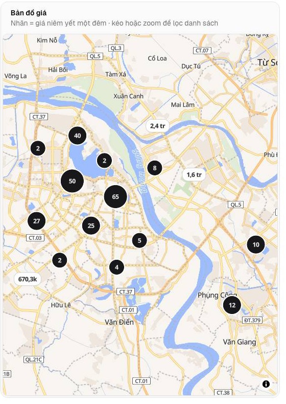
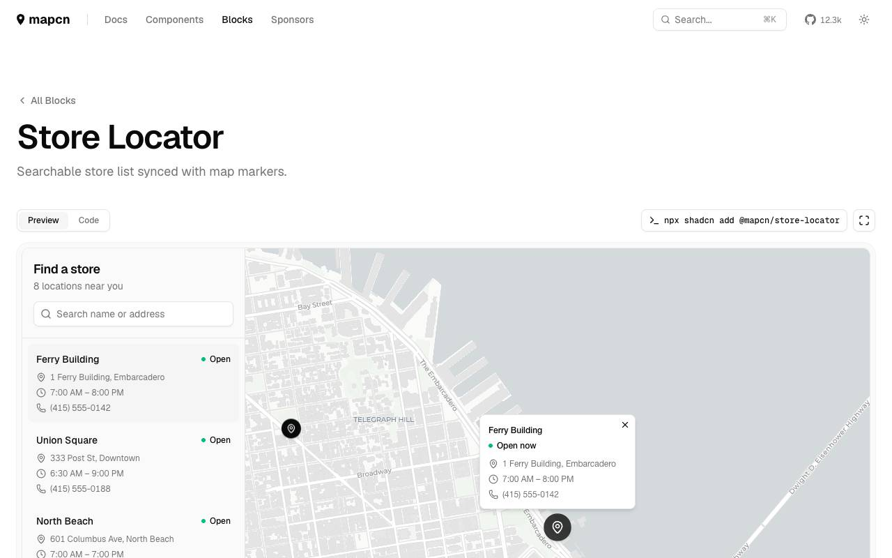
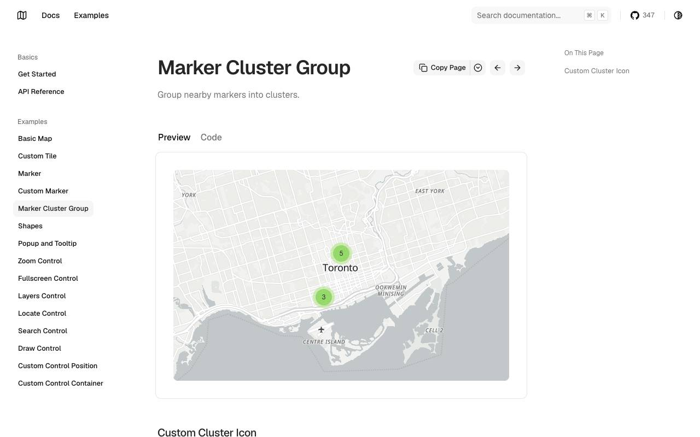
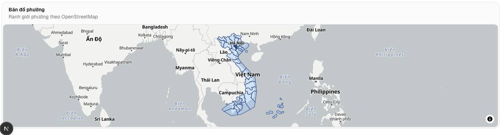
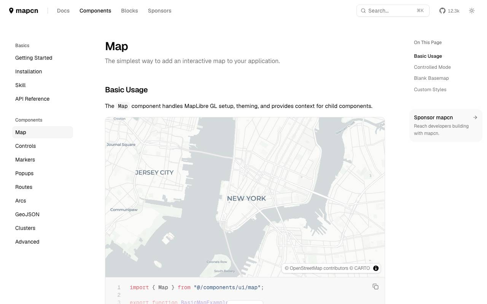
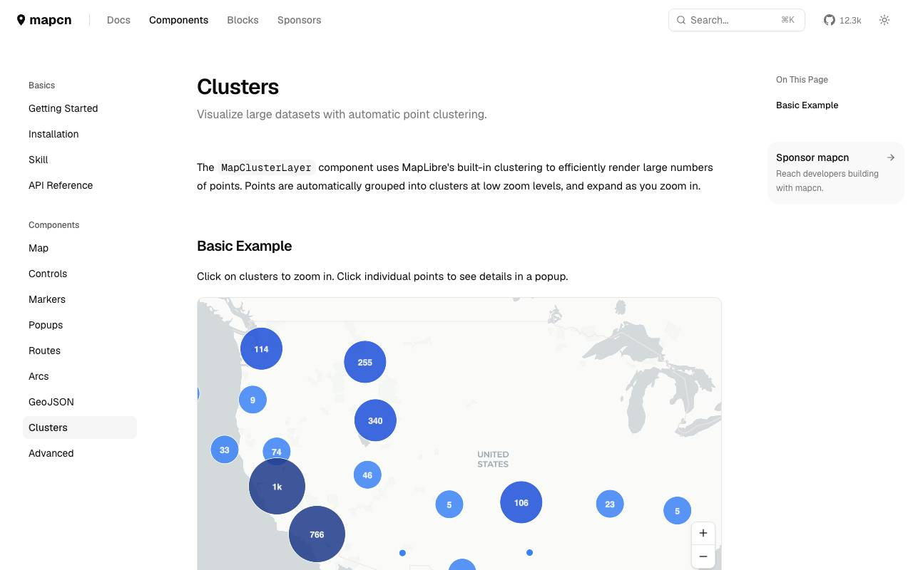

Bản đồ đích cổng Invest — trang → block
Khảo sát MCP reui 2026-10-23 (compose_page · search · get_block · get_thumbnail), plan Pro. Ảnh hiện trạng: nhánh main f51b01c, sáng, 1440px, chụp đầu trang tới 3200px. Ứng viên viền xanh = máy khuyến nghị; nhãn “đang dùng” = block đã chuyển thể. Bấm ảnh để mở to / xem bản sống.
Shell cổng Invest
| Ứng viên | Hợp | Vướng | Kết luận |
|---|---|---|---|
app-shell-30 (đang dùng) | Top nav 4 mục phẳng (Thị trường · Listing · Lợi suất · So sánh), bản đồ + biểu đồ được trọn bề ngang, view track khớp mục lục Insight, cảm giác sản phẩm công khai | ⌘K phải ghép c-command-5 (đã ghép). Chật nếu > 6 module | Giữ |
app-shell-36 (Ops, B1) | Đồng bộ một shell cho hai cổng | Sidebar nhóm hợp 7 trang quản trị của Ops; Invest chỉ 4 mục, sidebar ăn chỗ của bản đồ; mặt “console giám sát” không hợp cổng công khai | Loại |
app-shell-28 | Section tab + rail, gần hướng AirDNA mới | Rail thừa với 4 module | Dự phòng khi > 6 module |
Lý do theo IA (invest-portal-ia.md §4): Invest là 4 mục cùng nhóm Research, đọc là chính; whenNotToUse của app-shell-30 chỉ chặn khi cần “side rail of grouped links” — đúng trường hợp Ops (đã sang 36), không phải Invest. Marketing giữ navbar-12; auth không shell.
Bản đồ — ReUI không có; Mạnh chọn mapcn (2026-10-23)
Ứng viên do điều phối đưa (Mạnh đề xuất shadcn-map). Đã kiểm lại: app dùng maplibre-gl ^6.14.0; registry @mapcn/map khai maplibre-gl@^6 + lucide-react, @mapcn/choropleth kéo thêm next-themes. Không cài gì trong phiên này.
| Nguồn | Hợp | Vướng | Kết luận |
|---|---|---|---|
| mapcn (MIT, 12,3k★) | MapLibre ^6 nguyên bản, cài bằng shadcn CLI (@mapcn/…), không asChild; có block choropleth (chú giải + tooltip), store-locator (danh sách đồng bộ marker), clusters, heatmap | Phải nối lại lib/map-style.ts (OpenFreeMap sáng/tối, chèn lớp dưới nhãn) và setWorkerUrl Turbopack (lib/map-worker.ts); choropleth mẫu là thế giới, phải đổi sang ranh giới phường + bậc p30/p60/p90 (finder/bins.ts); thêm registry thứ 2 vào components.json | Chọn |
| shadcn-map (MIT, 347★) | Có cluster, shapes, popup, các control | Leaflet + react-leaflet; MapLibre chỉ qua plugin và đòi maplibre-gl ^5 (app ^6.14); mã new-york-v4 Radix có asChild (bẫy base-nova); 1 file 1.774 dòng + 8 gói; không choropleth/chú giải | Loại |
| Giữ tự viết (hiện tại) | Đã chạy, đã có nhãn giá kiểu Airbnb + gom cụm, sáng/tối | 3 file MapLibre tự viết là ngoại lệ hex của lint; không có nguồn chuẩn để so | Lối không đổi |

Finder hiện tại — ChoroplethMap
mapcn choropleth — Finder
shadcn-map shapes — không có choropleth
Duyệt listing hiện tại — ListingsMap (nhãn giá + cụm)
mapcn store-locator (+ clusters) — Duyệt listing
shadcn-map cluster
Insight hiện tại — MiniMap
mapcn map cơ bản + lớp GeoJSON — Insight
mapcn clustersPhát hiện kèm (không thuộc phiên này): bản đồ Finder và MiniMap của Hà Nội mở ra cả nước — trong ảnh có vùng tô gần Cần Thơ và ranh giới “phường” trải khắp Việt Nam — chưa kiểm nguyên nhân (nghi gán khu vực/ranh giới ở pipeline); đổi thư viện bản đồ không sửa được.
Thuật ngữ cần chốt (chuyển sang CONTEXT.md)
| Chỗ lệch | Thấy ở đâu | Đề xuất |
|---|---|---|
Neo mục lục Insight tiếng Việt (#tong-quan #hieu-suat #co-cau #phuong #listing #nguon-cung #loi-suat) — cũng là đoạn URL | components/insight/insight-page.tsx:122 | #overview #performance #mix #submarkets #listings #supply #yield (đổi ở đợt I2) |
Tham số area = mã khu vực địa lý, trong khi RESO dùng LivingArea cho diện tích; diện tích đang là m2 | /yield?area&pn&m2&price… | Địa lý giữ area/market/submarket; diện tích → livingArea (RESO) |
Tham số pn viết tắt tiếng Việt (phòng ngủ) | /yield?pn= | bedrooms (RESO BedroomsTotal) |
| Một chỉ số, bốn nhãn: “Giá phòng (ADR)”, “Giá đêm (ADR)”, “Giá niêm yết”, “Giá/đêm” | Insight KPI, /dau-tu, /listing/[id], thẻ /listings | Một nhãn cho ADR (trung bình đêm đã đặt) và một nhãn khác cho giá niêm yết của một listing |
| “Lợi suất / Yield ròng / Tổng lợi suất brutto / Cash-on-cash” | /yield, /dau-tu | Chốt bộ chỉ số khi gộp /dau-tu vào /yield (I4) |
| “Doanh thu” vs “Doanh thu ước tính” vs “Doanh thu brutto/tháng” | Insight, listing, /dau-tu | Một định nghĩa + một nhãn (Phương pháp) |
listing (Airbnb) vs property (“Một Căn Nhà”) vs nhãn menu “Listing” | nav, /listing/[id], /listings | Chốt cùng phiên CONTEXT.md (đã có trong danh sách của phiên đó) |
Route /dau-tu mang nhãn “Mô phỏng đầu tư”, nút trên Insight ghi “Đầu tư” | Insight actions | Hết khi gộp vào /yield |
Đề xuất cắt đợt dọn theo NHÓM TRANG
Mỗi đợt làm trọn khung + KPI + biểu đồ (đi bảng màu chung của B3) + trạng thái (tải/trống/lỗi) cho nhóm trang của nó — thay cho B2 (khung & KPI) / B4 (trạng thái) / B5 (phần còn lại) cắt theo loại component.
| Đợt | Trang | Block đích chính |
|---|---|---|
| I1 Finder | /[country] | solution-analytics-1 + ChoroplethMap |
| I2 Insight | /[country]/[market], /[submarket] | solution-analytics-8 khung + chart-6/chart-13 + InsightGrid |
| I3 Listing | /listing/[id], /[market]/listings | product-detail-5 · product-grid-2 + filters |
| I4 Lợi suất | /yield, /[market]/dau-tu | form-11 + data-grid-advanced-7 + chart-36 |
| I5 So sánh + Đã lưu | /so-sanh, /saved | comparison-1 · wishlist-2 |
| I6 Trang chủ/Phương pháp/Auth | /, /phuong-phap, /login, /register | bộ marketing hiện có · faq-3 · auth-4/5 |